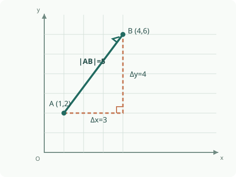

示例题：向量长度为什么是 5？
这是 Skill 教学组件示例，不是任何已上传学校试卷的原题，也不作为 PDF 来源证据。
题意导读与示例题
给定点 A(1,2) 与 B(4,6)，求向量 AB 的模。我们要找的不是终点坐标，而是从 A 走到 B 的直线距离。

逐步解题
步骤 1：从两个点得到位移向量
为什么？ 向量 AB 描述从起点 A 到终点 B 的位移，所以终点减起点。
检查： x 从 1 变到 4 增加 3；y 从 2 变到 6 增加 4。
步骤 2：把斜线长度转成直角三角形
学生疑问： 为什么要平方相加，而不是 3+4？因为图中 3 和 4 是互相垂直的两条直角边，所求是斜边。
检查： 距离不可能比任意一条直角边短；5 大于 3 和 4。
步骤 3：独立验证答案
把 3、4、5 代回勾股关系。即使改成从 B 指向 A，向量方向相反，长度仍是 5。
迁移问题： 如果把 B 改成 (4,−2)，水平位移仍为 3，竖直位移为 −4，长度为什么仍然为 5？